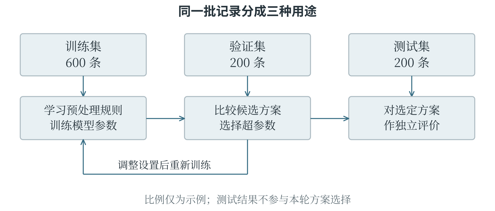
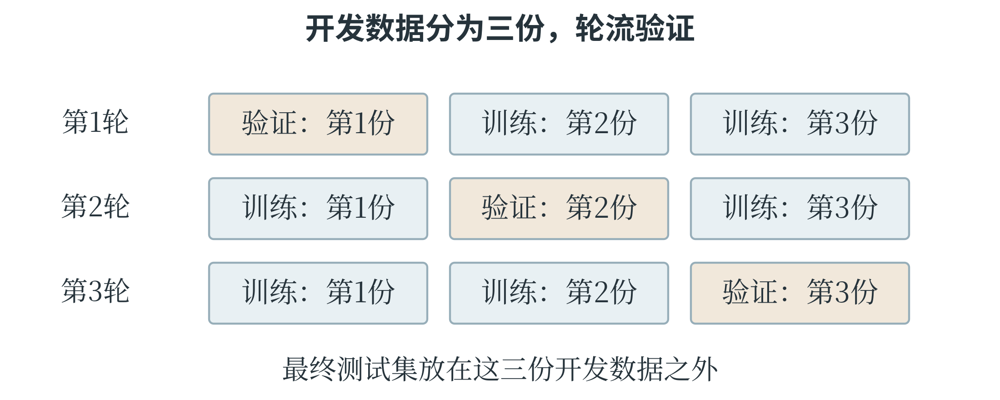

5.2 从问题定义到模型应用
任务定义与数据准备
一个可操作的任务定义，应说明输入是什么、输出是什么、何时使用结果，以及怎样判断结果可用。以预测温室下一小时的温度为例，输入可以是当前温度、室外温度和通风状态，输出是下一小时的温度。预测时尚未发生的“下一小时实测温度”只能作为训练标签，不能同时放进输入。若不先规定预测时刻，就可能把未来信息误当成当时已知的条件。数据收集要覆盖实际使用中重要的情况。只在晴天收集的记录，很难充分反映阴雨天；只收集设备工作正常时的数据，也不足以检查异常情况下的表现。记录还应包含测量单位、时间、来源等必要说明，这些信息帮助判断能否合并、是否重复、标签有没有对错。数据数量重要，但大量相同条件下的记录不能替代缺失的重要场景。
数据标注是按明确规则为样本补充目标信息。判断叶片图片是否清晰，就应说明模糊、遮挡和尺寸过小分别怎样处理；否则不同标注者可能依据不同标准判断。遇到无法确认的样本，可以暂列为待核对，而不是强行给一个答案。抽查、复核分歧和记录修改原因，能使标签更可靠。若任务本身没有清楚的类别界限，先调整任务和标注规则，通常比立即训练更有价值。
标签是怎样形成的
为了训练“图片是否适合识别”的分类模型，不能只请标注者凭感觉写“好”或“不好”。可以先规定：叶片主体完整、主要纹理能够辨认、没有严重遮挡的图片标为可用；主体大部分缺失或模糊到无法辨认的图片标为不可用；难以确定的图片先留待复核。这些规定把任务目标转化为可执行的标注依据，也使分歧有机会被具体讨论。如果两位标注者对同一张照片给出不同标签，可以检查分歧究竟来自哪里：一人重视图像是否美观，另一人重视叶缘是否完整，说明任务理解不一致；两人理解相同，却看不清某块区域，则可能需要更清晰的原图或更有经验的复核。
标签也可以直接来自测量。预测叶片面积时，标签是按约定方法测得的面积；预测下一小时温度时，标签是那一小时实际到来后的观测值。无论来自人工判断还是仪器，都应与输入样本准确对应。把甲叶片的特征配上乙叶片的面积，程序通常不会报错，但训练会学习错误的对应关系。样本编号和采集时间因此虽未必作为模型特征，仍然是整理数据的重要依据。
为什么要把数据分开
训练集用于学习模型参数；验证集用于比较方案、选择超参数和调整方法；测试集用于方案确定后的独立评价。可以把它们理解为三种不同用途的材料：一部分参与练习，一部分帮助决定怎样练习，最后一部分检查定下来的方法面对新材料时表现如何。图 5-2 展示了它们在流程中的位置。

例如，1000 条相互独立、来自同一类使用条件的记录，可以分成 600 条训练、200 条验证、200 条测试。这个比例只是示例，不是固定要求。数据较少时，可以使用交叉验证：将用于开发模型的数据分成几份，轮流留出一份作验证，其余部分训练，最后汇总多轮结果。每轮都应重新训练模型，也应重新学习这一轮的数据处理参数，不能先用全部数据完成标准化再分折。
验证集上的结果会影响方案选择，因此它也会逐渐被“用熟”。反复尝试大量方案后，某个方案可能只是恰好适合这份验证集。测试集应尽量保留到选择结束后使用；若看过测试结果又据此不断改模型，这份材料便已经参与开发，不再具有原先那样的独立评价作用。
测试时，模型可以读取测试样本的特征来预测；测试信息不能再反过来帮助选择和学习模型。
划分方式还要与实际问题一致。同一片叶子的多张近似照片如果分别进入训练集和测试集，模型可能借助几乎重复的材料获得好成绩；若要评价对新植物的识别能力，就应按植物对象分组划分。预测未来温度时，应按时间用较早记录训练、较晚记录评价，不能把未来和过去任意混合。随机划分适用于相应的独立样本情境，并不是所有任务通用的步骤。
看清一次交叉验证
假设已有六组相互独立的样本，将它们分成三份，每份两组。第一轮用第 2、3 份训练，第 1 份验证；第二轮用第 1、3 份训练，第 2 份验证；第三轮用第 1、2 份训练，第 3 份验证。每轮重新开始训练，不能让上一轮学过验证对象的模型直接接着算。图 5-3 用不同位置表示每轮的用途。

如果三个验证部分大小相同，准确率分别为 80%、90%、85%，它们的平均值是 85%。这个汇总反映同一种设置在不同划分上的表现。比较另一组设置时，应沿用相同划分，才便于把差异归因于设置，而不是恰好换了一批更容易的样本。各折样本量不同时，怎样汇总还应明确是按折平均，还是合并所有预测后计算；二者未必得到同一个数。这三轮都属于模型开发过程。若另外留出独立测试集，它不会参加这些轮换。通过交叉验证选好设置后，可以在全部开发数据上重新训练最终模型，再在测试集上评价。对于同一对象的多次测量，还应将同一对象的记录放在同一份里，避免近似重复的资料跨越训练与验证。
时间序列需要另作安排。预测未来气温时，可以用前四个月训练、第五个月验证，再用前五个月训练、第六个月验证，使每次学习都发生在被预测的时间之前。不能为了凑成形式整齐的几折，让模型先见到未来资料。这种按真实使用条件组织验证的想法，比记住一个固定的划分比例更重要。
训练、选择与部署
训练是利用训练数据确定模型的计算规则。可以先建立一个简单的基线模型，作为比较起点。例如，回归任务先总是预测训练集目标的平均值，分类任务先总是预测训练集中最多的类别。基线也许不够好，却能帮助发现复杂方法是否真的带来了改进：若一个精心训练的模型还不如简单基线，就需要检查数据、代码和任务设定。
模型的参数是从训练中学到的数值，例如直线的斜率和截距；超参数是用来规定模型结构或训练方式的设置，例如邻居数量、树的最大深度、学习率。超参数可能由人选择，也可以由搜索程序根据验证结果选择。
区分参数和超参数，依据是它们在学习中的作用，并不是看数值由人填写还是由程序选择。
选好方案后，部署是把模型连同必要的数据处理步骤放到实际使用环境。训练时输入长度以厘米记录，使用时也必须按一致规则转换；训练时特征顺序为“长度、宽度”，使用时不能颠倒。部署的不只是一个预测公式，还包括输入检查、处理规则和结果解释。若预测超出模型经过评价的范围，系统应有明确的处理方式，例如转交人工复核，而不是把任何数值都当成同样可靠。使用环境还会变化。摄像头更换、光照改变、用户群体变化，都可能使新数据与训练时不同，这种变化常称为分布变化；随时间发生的变化也常叫数据漂移。持续观察错误类型与数据构成，有助于决定是否补充样本、重新训练。
先知道简单方法能做到什么
基线能够给模型成绩提供一个参照。假设训练目标为 2、4、6，它们的均值为 4。一个不看输入的回归基线，遇到任何新样本都预测 4。在三条验证记录上，真实目标分别为 3、4、8，那么这条基线的误差是 1、0、−4，MAE 为 \(5/3\)，MSE 为 \(17/3\)。均值来自训练集，验证目标只用于计算这些误差。现在有两个候选模型，甲在同一验证集上预测 3、5、7，乙预测 4、4、6。甲的误差为 0、1、−1，MAE 和 MSE 都为 \(2/3\)；乙的误差为 1、0、−2，MAE 为 1，MSE 为 \(5/3\)。在这份验证材料上，两个模型都优于基线，甲的两项指标也都优于乙。表 5-2 把比较放在同一处，数值经过了显示舍入。
表 5-2 同一验证材料上的基线与候选模型
| 方法 | 三条预测 | MAE | MSE |
|---|---|---|---|
| 固定均值基线 | 4、4、4 | 1.667 | 5.667 |
| 模型甲 | 3、5、7 | 0.667 | 0.667 |
| 模型乙 | 4、4、6 | 1.000 | 1.667 |
这张表回答的是“候选方法是否在这份验证材料上带来改进”。接下来仍要查看差异是否来自某一条特殊记录，以及评价材料是否足够代表用途。基线的意义也不限于陪衬：如果某个复杂模型在表中明显更差，就值得检查它是否列顺序错误、目标与特征错配，或训练尚未完成。一个简单、可手算的参照，有时比直接在长程序里寻找问题更有效。
分类基线也遵循相同原则。如果训练集里甲类占 70%，可以把“全部预测甲类”作为一个起点。在类别比例相近的验证集上，它可能取得约 70% 的准确率，但一个乙类样本也识别不出来。比它高一个百分点和比它高二十个百分点，所说明的进展不同；即使总准确率超过它，也还要检查需要识别的类别是否真的改善。